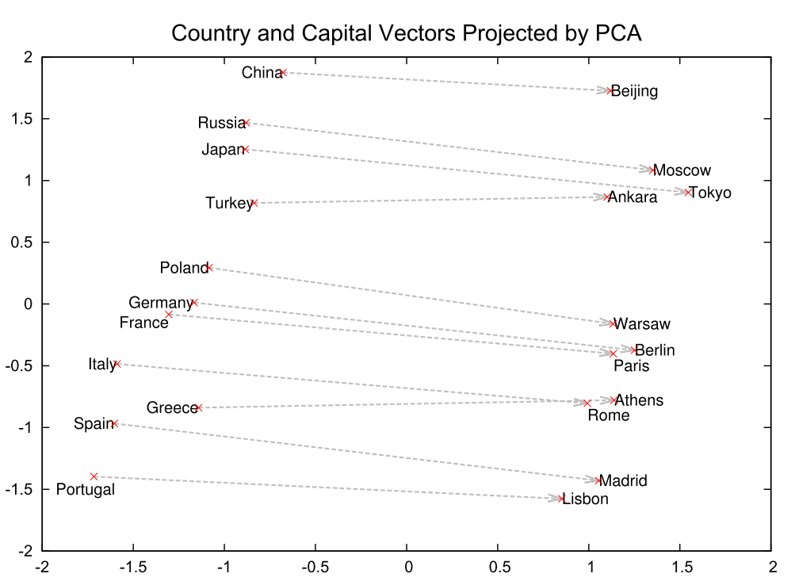

Word2Vec
Word2Vec is a generic term for algorithms for learning distributed representations of words, originating from a paper published in 2013 by Tomas Mikolov et al. at Google at the time.
In NLP tasks, the input consists of words, but if words are treated as words, they are just a list of letters to the computer, making it difficult to solve complex NLP tasks such as translation and document classification.
Therefore, task performance is directly related to how well words, phrases, sentences, and other semantic elements can be converted into useful semantic representations or features.
Word2Vec is one of the most well-known tools for learning useful features (vectors) from words; with Word2Vec, semantically similar words can be converted into similar vectors, and furthermore, the resulting word vectors are additive in nature. For example, "Japan" - "Tokyo" ≒ "France" - "Paris".
The graph below visualizes the vectors of several countries and their capitals after acquiring word vectors with Skipgram, one of Word2Vec's algorithms, and then compressing the dimensionality using PCA. This is one of the reasons why Word2Vec has become famous, because it can even learn the relationship between countries and their capitals, despite the fact that it is unsupervised learning.
Reference: Distributed Representations of Words and Phrases and their Compositionality
There are two main learning models for Word2vec, called CBOW and Skipgram.
CBOW learns a word vector that can solve a word prediction task based on surrounding words and Skipgram learns a word vector that can solve a word prediction task based on surrounding words.
These can both be viewed as based on the "distributional hypothesis" that words are characterized by their surroundings.
In this exercise, we will implement CBOW and Skipgram using PyTorch and actually train on a Japanese dataset. (For this reason, we will also deal with Japanese preprocessing.) In addition, we will also implement Negative Sampling, an efficient learning method.